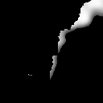
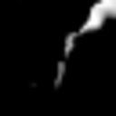
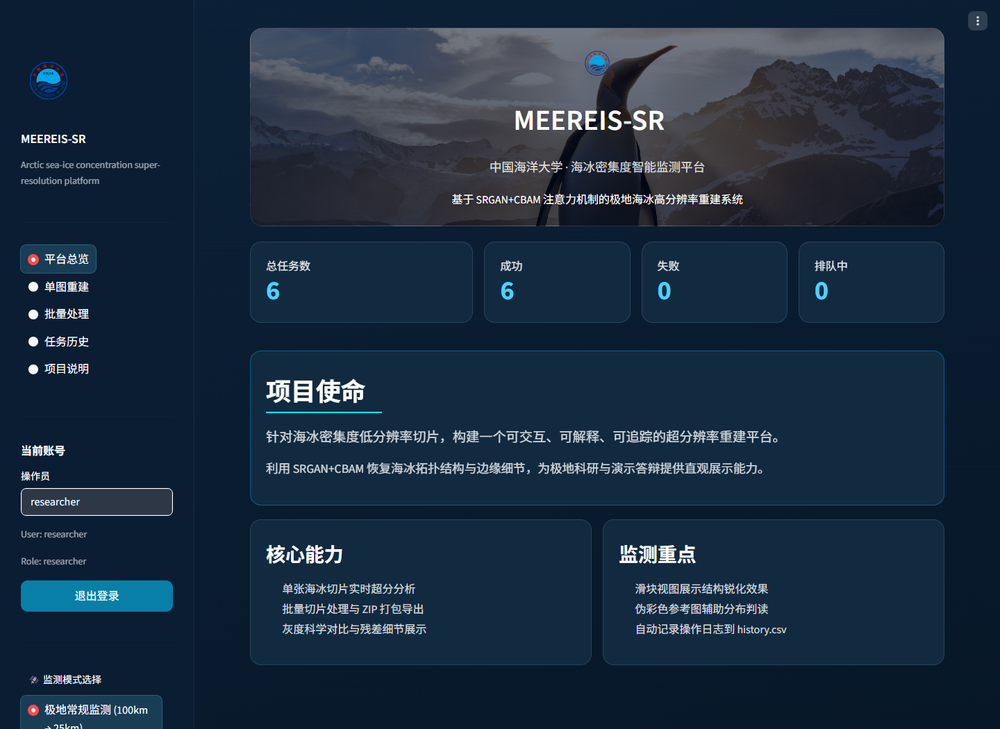
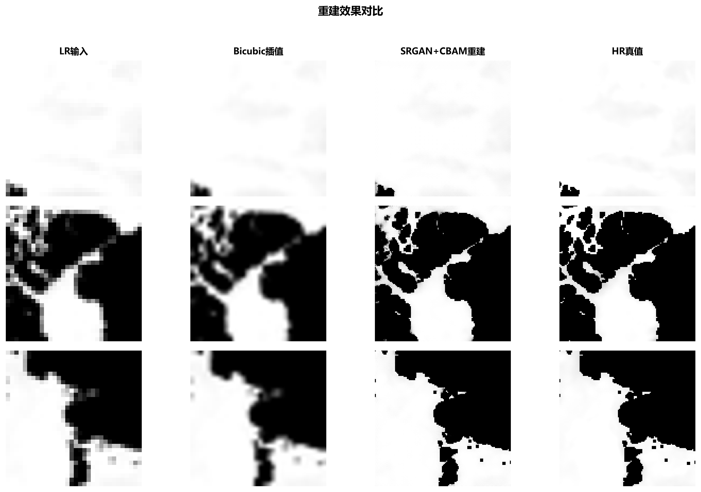

计算机视觉 · 科学数据 · AI 工程化让海冰重建模型
成为可使用的科研平台
MEEREIS-SR 北极海冰超分辨率重建与智能增强平台。独立完成科学数据处理、SRGAN 模型优化、实验评估与交互平台开发。
下方为真实平台运行截图与预计算样例，可直接浏览。在线展示页不执行模型推理。
4×图像超分辨率
28.19 dB测试集平均 PSNR
0.9877测试集平均 SSIM
543独立测试样本
直接拖动，查看重建细节
BicubicSRGAN + CBAM


‹ ›
BicubicSRGAN + CBAM从图像到结果的完整流程
① 上传图像，选择 25 km / 10 km 模型。
② 后台异步执行单张或批量重建。
③ 查看灰度、伪彩色与残差，滑块比较结构细节。
④ 下载结果，回溯历史任务。
平台界面由 Streamlit 实现；FastAPI、Celery 和 PyTorch 承担任务提交与推理。
平台最终效果
平台首页：监测模式、任务状态与功能入口。

点击截图可查看原图。实验依据
OSI SAF 40 km → 10 km，543 个独立测试样本，Bicubic 合成退化条件。指标来自原研究实验，展示截图不用于替代全量评价。
| 方法 | PSNR ↑ | SSIM ↑ |
|---|
| Bicubic | 21.18 dB | 0.9506 |
| SRGAN + CBAM | 28.19 dB | 0.9877 |
平均 PSNR 较 Bicubic 提升 7.01 dB；CBAM 相对无注意力基线平均增益 0.83 dB。

我做了什么
模型研发与实验分析
科学数据解析与切片、合成退化配对、单通道 SRGAN、CBAM 注意力、判别器更新调节，以及独立评估、消融和失败案例分析。
模型工程化与平台交付
推理接口、双模型切换、单张与批量任务、科学可视化、结果下载及任务持久化，形成可操作、可追踪的交互流程。